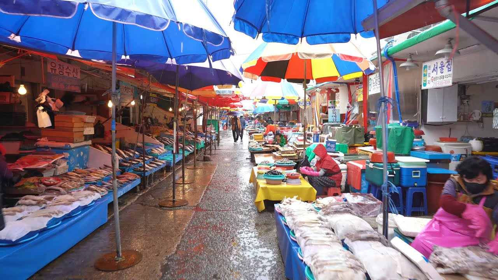

Attactions of Busan
부산광역시 사하구 감천동에 있는 마을이자 부산 원도심의 대표적인 랜드마크이다. 산복도로 르네상스 사업을 통하여 도시재생 프로젝트로 큰 성과를 거둔 성공적인 사례라 할 수 있다.
한국의 마추픽추 혹은 산토리니라는 별명이 있다. 다만 그리스 산토리니처럼 해안가에 붙어 있지 않으며 풍경 또한 산토리니와 유사하지도 않다.
가장 가까운 바닷가인 감천항중앙부두에서 마을 입구에 해당하는 감천2동주민센터까지 약 1 km 떨어졌고 설상가상으로 감천항이 만(湾) 형태라 탁 트인 곳도 아니다.
2019년 기준으론 해안절벽 앞의 마을인 영도구의 흰여울문화마을을 산토리니로 비유하는 경우가 점점 많아졌다
울긋불긋한 단독주택이 언덕에 다닥다닥 붙은 특이한 풍경덕에 몇몇 뮤직비디오에 여러 번 등장한 적이 있다.
2007년쯤부터 '한국의 산토리니'라고 불리며 사진가들 사이에서 입소문이 돌기 시작했고, 그 사진들이 인터넷에 돌면서 숨은 명소로 전국적으로 알려졌다.
영화 히어로, 마이 뉴 파트너 등에서도 나왔고 특히 부산을 배경으로 한 영화 사생결단에서는 아예 주인공 이상도(류승범)와 그 삼촌 이택조(김희라), 김지영(추자현) 같이 사는 집이 바로 이 동네다.
이후 전국적으로 관광 명소로 알려졌지만, 사실 이 곳은 6.25 전쟁 피난민촌으로 시작된 부산의 대표적인 낙후 지역으로서, 실제 거주민들은 항상 벗어나고 싶어하는 곳이다.
관광객들이 가장 많이 찾는 곳은 아무래도 고도가 높아 전망이 좋은 감내2로이다. 산야의 감내2로 구간은 주로 풍경 사진을 찍는 사람들이 많고, 그 보다 북쪽으로 길 양옆이 모두 주거지인 곳부터 본격적으로 관광객들을 위한 상점 등이 나타나며, 여기부터 감천문화마을 공영 주차장 쪽으로 갈수록 점점 붐비는 편이다.

부산광역시 중구 남포동 4가에 있는 부산을 대표하는 국내 최대의 수산시장.
심지어 한 블로거의 설명에 의하면 아쿠아리움에서나 볼 수 있는 희귀 어류들도 자갈치 시장에선 산 채로 볼 수 있다고.
물론 운이 좋아야 한다. 물때가 안 좋을 때 가면 평범한 어류들밖에 없다고.
부산 중구의 마스코트도 자갈치 아지매다.
자갈치시장이 끼고 있는 항구는 부산남항(南港)인데 이 항구가 어항의 기능을 하고 있기 때문에 자연스레 이곳에 수산 시장이 들어선 것이다.
부산 도시철도 1호선 남포역, 자갈치역과도 인접해 있다. 건물 인근의 친수 구역에서 멋진 경치를 배경으로 사진을 찍을 수 있다.
자갈치라는 이름은 생선이름에서 나온 게 아니라 바닥에 자갈이 많아서 붙은 이름이라고 한다.
물론 시장 내부를 현대적으로 단장한 지금은 자갈을 찾아볼 수 없다.
치라는 말은 언덕 치(峙)에서 따왔다고 하는 어원도 있고 '자갈이 있는 곳'[處]의 처가 치로 변했다는 어원도 있다.
현대화하면서 수산시장 뿐 아니라 여러가지 다양한 업소들이 입주했다.
1층에는 기존의 수산시장이 있다. 바닥이 화강암으로 되어 있기에 깔끔한 인상을 준다.
살아있는 해산물들이 가득 찬 수조가 가득한데 이거 구경하는 게 상당히 재밌다.
2층에는 1층의 시장에서 산 해산물들을 바로 회쳐 먹을 수 있는 횟집들이 입점해 있다.
정확히 말하면 초장집에 더 가깝다만. 횟집들이 각각 독립된 구조가 아니라 2층 전체가 개방형으로 탁 트여 있는 구조라 출입문 같은게 없다.
시장 자체가 관광지이므로 횟집마다 사람이 가득하다. 특히 바다가 보이는 창가쪽은 더 붐빈다.
1층과 2층이 이른바 '시장' 분위기가 나는 곳이고, 그밖에 3층에는 노래방과 상인회
사무실이 있으며, 5층과 6층에는 '아리아'라는 뷔페식 시푸드 레스토랑과 웨딩홀이, 7층에는 게스트하우스와 전망대가 있다.

해수욕장 동편에 있는 거북섬을 육지와 있는 다리인 구름산책로는 일부구간은 투명 강화유리로 되어있어 바다 한가운데를 걸어가는 느낌을 느낄 수 있다.
바다 위를 거닐며, 수많은 배가 정박해있는 송도연안과 송도해수욕장을 한눈에 볼 수 있어 부산 해수욕장의 새로운 랜드마크로 부상하고 있다.
2015년에 문을 연 송도구름산책로는 바다로 이어지는 365m길이의 다리다.
다리 위에 조성된 강화유리와 매직 그레이팅 구간을 지날 때 바닥을 통해 일렁이는 바다를 볼 수 있어 짜릿한 기분을 만끽할 수 있다.